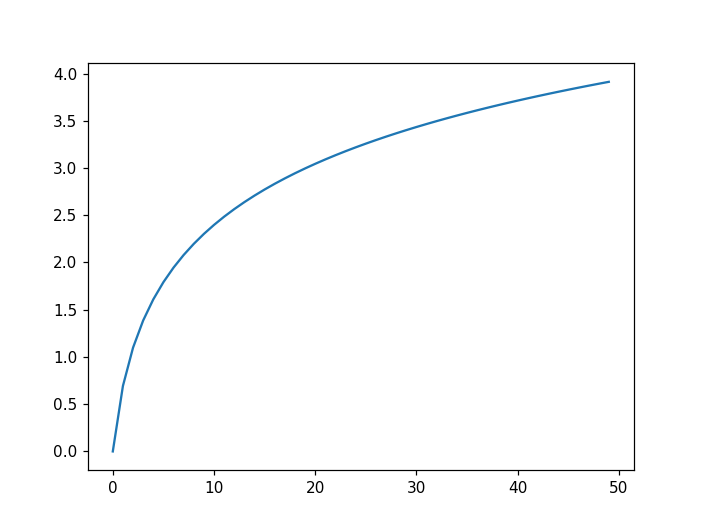
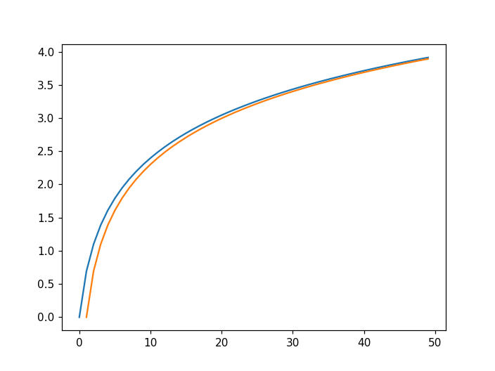

TD03 : Retour sur les simulations⚓︎
 Lien pour ouvrir une console Python dans un nouvel onglet
Lien pour ouvrir une console Python dans un nouvel onglet
1. Rappels sur les expériences de Bernoulli⚓︎
rappel de la syntaxe d'importation de numpy.random
1 2 | |
Comme l'instruction rd.random() renvoie un nombre aléatoire entre 0 et 1, une variable aléatoire suivant une loi de probabilité de Bernoulli de paramètre \(p\) peut être simulée par un test d'appartenance de rd.random() à l'intervalle :
- \([0;p]\) (succès)
ou
- \(]p;1]\) (échec) :

Exercice 1
inspiré par Ecricome 2018
On considère une urne \(U\) contenant deux boules blanches et une boule noire indiscernables au toucher, ainsi qu’une urne \(V\) contenant une boule blanche et trois boules noires, elles aussi indiscernables au toucher. On effectue une suite de tirages d’une boule dans ces urnes en procédant comme suit :
- le premier tirage a lieu dans l’urne U ;
- tous les tirages s’effectuent avec remise de la boule piochée dans l’urne dont elle provient;
- si l’on pioche une boule blanche lors d’un tirage, le tirage suivant a lieu dans l’autre urne;
- si l’on pioche une boule noire lors d’un tirage, le tirage suivant a lieu dans la même urne.
Pour tout entier naturel non nul \(n\), on note \(X_n\) la variable aléatoire égale au nombre de boules blanches piochées au cours des \(n\) premiers tirages.
On rappelle qu’en Python, l’instruction rd.randint(1,k) renvoie un entier aléatoire compris entre 1 et k-1 .
Q1. Recopier et compléter les lignes à pointillés du script Python ci-dessous afin qu’il simule la variable aléatoire \(X_2\) :
1 2 3 4 5 6 7 8 9 10 11 12 13 14 15 16 17 18 19 20 21 22 | |
freq(n) qui renvoie la valeur moyenne du nombre de boules blanches tirées sur n expériences réalisées.
Q3. En déduire \(E(X_2)\) et retrouver ce résultat par un calcul théorique.
1 2 3 4 5 6 7 8 9 10 11 12 13 14 15 16 17 18 19 20 21 22 | |
1 2 3 4 5 | |
Expérimentalement :
>>> freq(10**6)
1.055416
Théoriquement, en faisant un arbre de probalités,
2. Retour sur le while.⚓︎
Exercice 2
Écrire un code où l'utilisateur doit deviner un nombre choisi aléatoirement par l'ordinateur entre 1 et 100. L'utilisateur devra être guidé après chaque proposition par les instructions «trop grand» ou «trop petit».
aide :
1 2 3 4 5 6 7 8 | |
3. Retour sur les suites⚓︎
L'étude des suites donne lieu à deux approches radicalement différentes :
Approche 1 : à l'aide une seule variable «simple»
Chaque terme est calculé successivement à partir du précédent dans une seule et unique variable «simple». Cette variable est initialisée avec le 1er terme.
Exemple :
le n-ième terme de la suite définie par \(u_{n+1}=2u_n + 1\) et \(u_0 = 3\) sera calculé par:
1 2 3 4 5 | |
 Avantages : simplicité, rapidité, peu d'espace-mémoire /
Avantages : simplicité, rapidité, peu d'espace-mémoire /  Inconvénients : aucun accès à tous les termes de la suite !
Inconvénients : aucun accès à tous les termes de la suite !
Approche 2 : à l'aide une variable de type liste
Chaque terme est calculé successivement à partir du précédent et stocké dans une liste. Cette liste est souvent préparée au préalable, remplie de 0 qui seront peu à peu par les termes de la suite.
Exemple :
Les n premiers termes de la suite définie par \(u_{n+1}=2u_n + 1\) et \(u_0 = 3\) seront calculés par:
1 2 3 4 5 6 7 | |
Avantages : tous les termes sont disponibles (on peut les cumuler, les tracer...)
Inconvénients : lenteur, complexité, place mémoire.
Exercice 3
extrait du sujet 0 Ecricome
On considère la suite \((u_n)_{n \in \mathbb{N}^*}\) définie par \(u_1=\dfrac{2}{3}\) et, \(\forall n \in \mathbb{N}^*, u_{n+1}=\dfrac{n+1}{3n}u_n\).
- Calculer \(u_2\) et \(u_3\). Donner les résultats sous forme de fraction irréductible.
- Compléter la fonction Python ci-desous qui prend en entrée la valeur \(n\) et renvoie la valeur de \(u_n\).
1 2 3 4 5 | |
\(u_2=\dfrac{4}{9}\) et \(u_3 = \dfrac{2}{9}\)
1 2 3 4 5 | |
Exercice 4
inspiré du sujet Ecricome 2019
Soit \(g\) la fonction numérique réelle définie sur l'intervalle \(]0;+\infty[\) par :
Q1. Écrire en Python la fonction \(g\).
Le script Python ci-dessous construit un vecteur ligne contenant les 50 premiers termes de la suite \((u_n)_{n \geqslant 1}\).
1 2 3 4 5 6 7 8 9 10 11 12 13 | |
Q2. Interpréter le contenu de la ligne 6 dans le contexte de l'énoncé.
Q3. Exécutez le script précédent et observez le graphique obtenu.
Q4. Sur ce même graphique, tracez la courbe représentative de la fonction \(\ln\).
1 2 3 | |
L'expression S = np.cumsum(u) permet de calculer le vecteur de sommes cumulées de la suite \(u\).

1 2 3 4 5 6 7 8 9 10 11 12 13 14 15 16 17 18 19 | |

Exercice 5
inspiré du sujet ESCP 2023
On pose \(u_{1}=\dfrac{1}{2}\) et, pour tout entier naturel \(n\) non nul :
Compléter la fonction ci-dessous afin qu'elle renvoie la valeur de \(u_n\) à l'appel de suite(n) :
1 2 3 4 5 | |
1 2 3 4 5 | |
Exercice 6
inspiré du sujet Ecricome 2023
On considère la suite \(\left(u_n\right)_{n \geqslant 1}\) définie par :
Compléter la fonction suivante, qui prend en entrée un entier naturel non nul n et un réel u1 de \([0,1]\) correspondant au terme initial \(u_1\) de la suite, et renvoie le terme \(u_n\).
1 2 3 4 5 | |